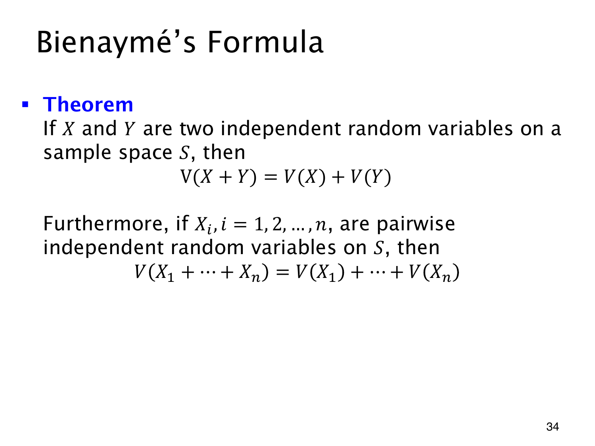

L1.11 · 第 34 页讲解原文
查看这一页课件

方差相加为什么需要条件
期望总能线性相加，方差却会出现交叉项。二阶矩有限时，
V(X+Y)=V(X)+V(Y)+2Cov(X,Y),
其中 Cov(X,Y)=E(XY)−E(X)E(Y)。若 X,Y 独立，协方差为 0，就得到 Bienaymé 公式
V(X+Y)=V(X)+V(Y).
有限多个变量的平方展开也只有两两交叉项，因此两两独立（pairwise independent）已经足够：
V(i=1∑nXi)=i=1∑nV(Xi).
不必要求更强的相互独立；实际上，两两协方差为 0 也足够，但协方差为 0 不能反推独立。
令 Y=X 且 V(X)>0，就能看出条件的作用：V(X+Y)=V(2X)=4V(X)，并非 2V(X)。同步变化的波动不能按独立情形相加。
两两独立变量加上固定权重时，V(∑iaiXi)=∑iai2V(Xi)，系数要平方。标准差一般也不能直接相加。